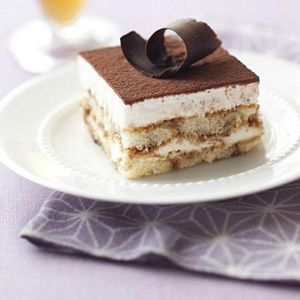

Tiramisu
Temps de préparation : 15 minutes
Temps de cuisson : 0 minutes

Ingrédients (pour 8 personnes) :
- 3 gros oeufs
- 100 g de sucre roux
- 1 sachet de sucre vanillé
- 250 g de mascarpone
- 24 biscuits à la cuillère
- 1/2 litre de café noir non sucré
- 30 g de poudre de cacao amer
Préparation de la recette :
- Séparer les blancs des jaunes. Mélanger les jaunes + sucre + sucre vanillé.
- Ajouter le mascarpone au fouet.
- Monter les blancs en neige et les incorporer délicatement à la spatule au mélange précédent.
- Préparer du café noir.
- Mouiller les biscuits dans le café.
- Tapisser le fond du moule avec les biscuits. Recouvrir d'une couche de crème, oeuf, sucre, mascarpone. Alterner biscuits et crème.
- Terminer par une couche de crème. Saupoudrer de cacao.
- Mettre au réfrigérateur 4 heures minimum.
Quelques liens intéressants
Bon appétit !